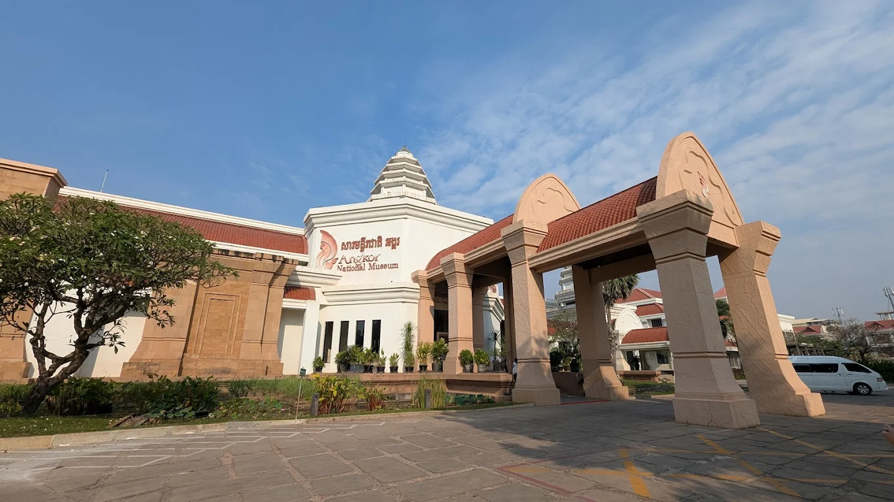
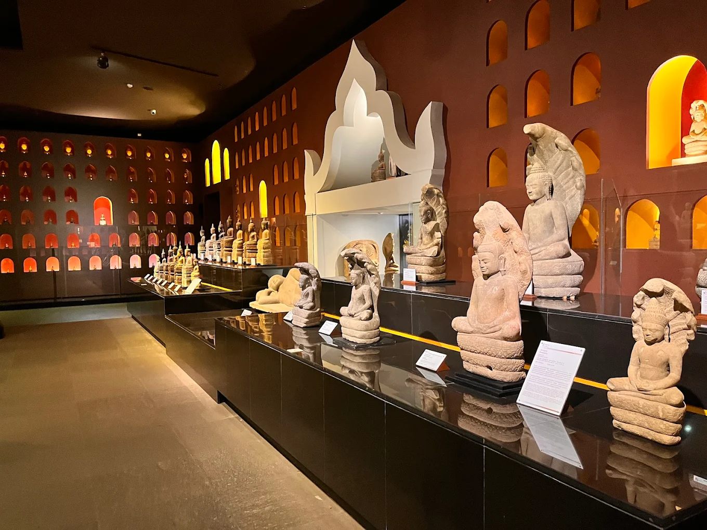
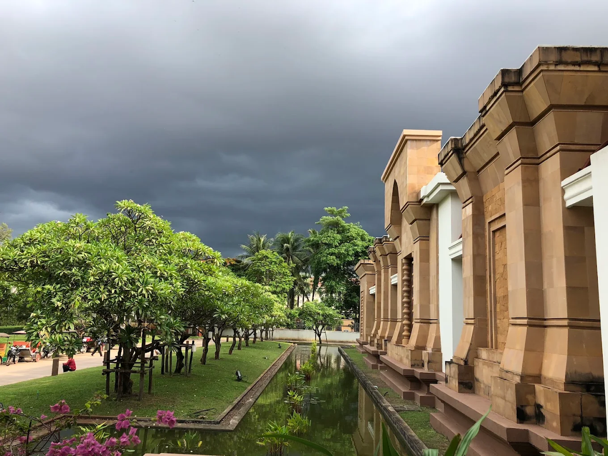
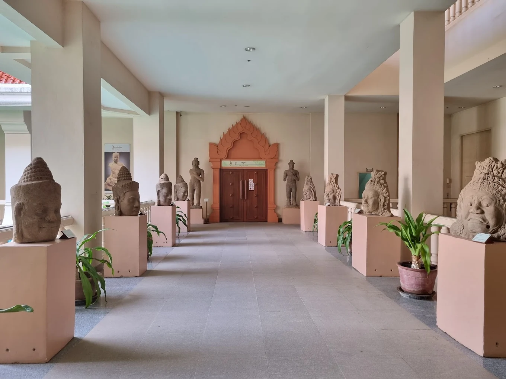
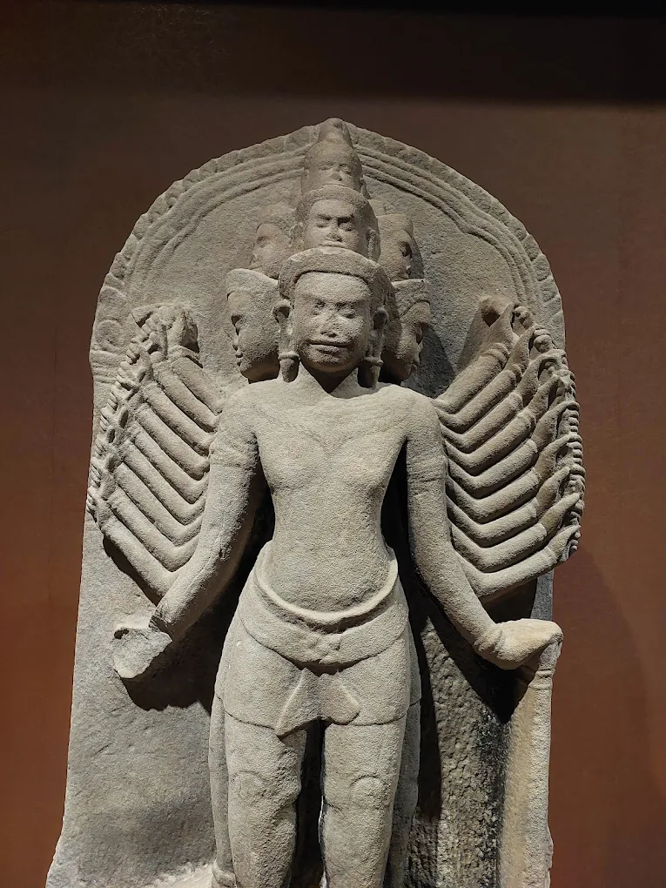
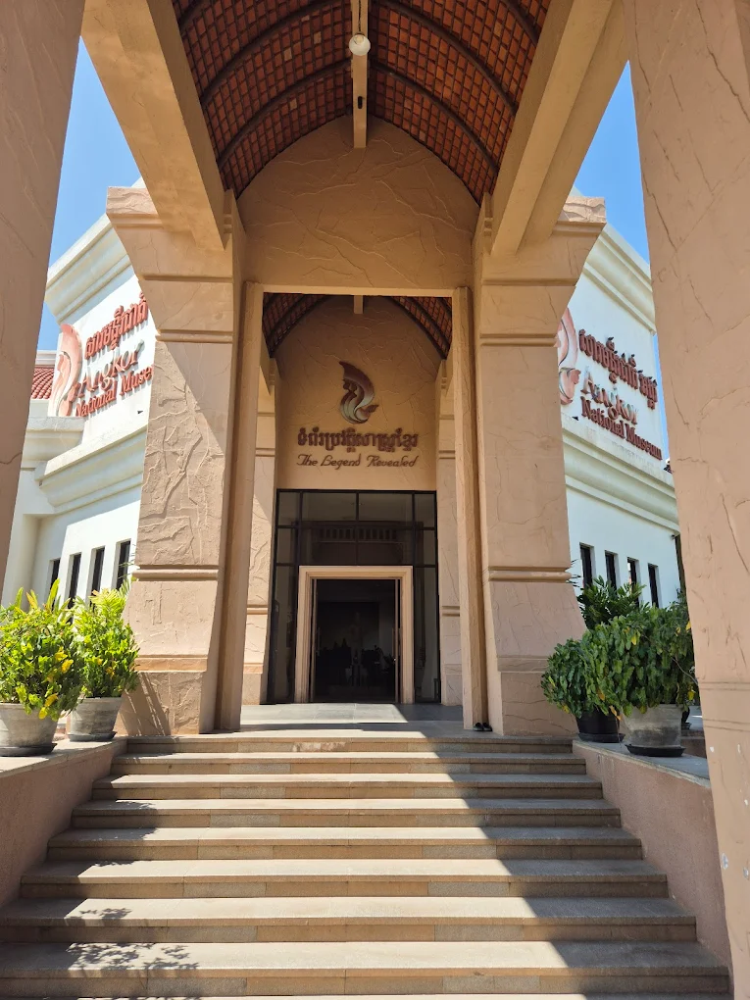

សារមន្ទីរជាតិអង្គរ គឺជាកន្លែងមួយដែលមិនអាចរំលងបានសម្រាប់អ្នកដែលចង់យល់ដឹងស៊ីជម្រៅអំពីអរិយធម៌ខ្មែរ និងប្រាសាទអង្គរ។ ស្ថិតនៅក្នុងក្រុងសៀមរាប ជិតតំបន់រមណីយដ្ឋានអង្គរ សារមន្ទីរនេះបានប្រមូលផ្ដុំ និងថែរក្សានូវបណ្ដុំវត្ថុបុរាណដ៏មានតម្លៃជាច្រើនពីសម័យអង្គរ។ ការតាំងបង្ហាញនៅក្នុងសារមន្ទីរនេះត្រូវបានបែងចែកជាច្រើនផ្នែក ដែលបង្ហាញពីប្រវត្តិសាស្ត្រ សាសនា របៀបរស់នៅ និងស្ថាបត្យកម្មដ៏អស្ចារ្យរបស់ខ្មែរ។ វាប្រើប្រាស់បច្ចេកវិទ្យាម៉ាល់ធីមេឌៀ (multimedia) ទំនើបៗដើម្បីបង្ហាញរឿងរ៉ាវ និងការពន្យល់អំពីវត្ថុបុរាណនីមួយៗបានយ៉ាងងាយស្រួល។ សារមន្ទីរនេះក៏មានវិចិត្រសាលដ៏ល្បីល្បាញមួយដែលមានរូបសំណាកព្រះពុទ្ធមួយពាន់អង្គ ដែលជាទីកន្លែងដ៏មានតម្លៃខាងសាសនា និងសិល្បៈ។ ការទស្សនាសារមន្ទីរនេះគឺជាការត្រៀមលក្ខណៈដ៏ល្អមួយ មុនពេលទៅទស្សនាប្រាសាទអង្គរពិតៗ ព្រោះវាជួយឱ្យអ្នកយល់ច្បាស់អំពីអត្ថន័យ និងរឿងរ៉ាវនៅពីក្រោយប្រាសាទនីមួយៗ។
1500 Rating &
350 Reviews
TOURISMLMLP មិនត្រឹមតែជាគេហទំព័រដែលចែករំលែកកន្លែងដំណើរកំសាន្តនោះទេ ព្រមទាំងផ្តល់សេវាកម្មងាយស្រួលទៅកាន់អតិថិជន និងប្រវត្តិសាស្រ្តសង្ខេបតាមខេត្ត នីមួយៗផងដែរ។